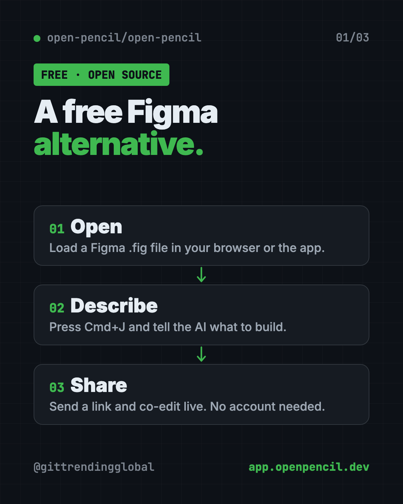
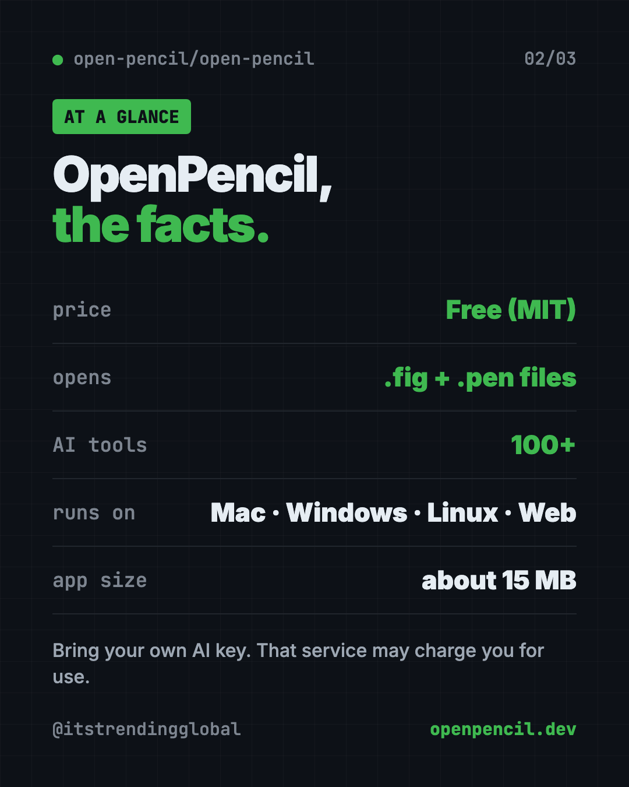
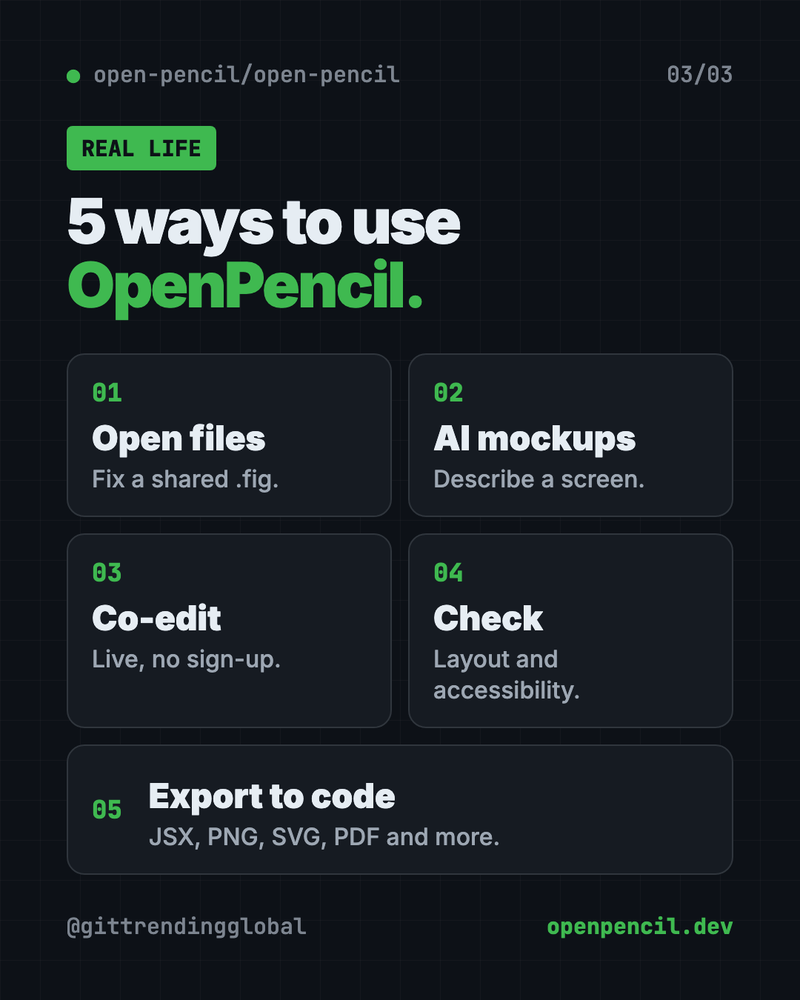

OpenPencil: Free Figma Alternative With AI (2026 Guide)
- Free AI tools
- Published 2026-10-15
- 7 min read
- Updated 2026-10-16
- Stars 9K
- License MIT
- By the It's Trending Global team
OpenPencil is a free Figma alternative. It opens and saves .fig files, builds designs from a chat prompt, and lets you co-edit live with no account.
OpenPencil is a free Figma alternative that opens and saves real Figma files. It also has a built-in AI helper: you describe what you want in a chat, and it builds or changes the design for you.
Someone sends you a Figma file. To work on it properly, you usually need Figma, an account, and often a paid plan. OpenPencil gives you another way in. Use it in your browser with nothing to install, or grab a small desktop app. This guide covers what it does, real ways to use it, and the exact setup steps.
Key takeaways
- Free and open source. MIT license, about 9K stars on GitHub.
- Opens Figma files. It reads and writes
.figfiles, and opens.penfiles from the Pencil design tool. - AI builds designs. Press Cmd+J, describe what you want, and the AI uses 100+ design tools to make it.
- Live teamwork, no account. Share a link and co-edit in real time, with cursors and even voice calls.
- Still growing. The makers say it's "usable today, with some rough edges."
What is OpenPencil?
OpenPencil is a design editor. That's an app for laying out websites, apps, posters and screens.
The README calls it an "open-source design editor" that opens .fig and .pen design files and "includes built-in AI." Open source means anyone can read and check the code.
You can use it three ways:
- In your browser at app.openpencil.dev, with nothing to install.
- As a desktop app for Mac, Windows or Linux. It's about 15 MB.
- From the command line, for people who want to automate design work. You can skip this part.

Why look for a free Figma alternative?
The README explains its reason plainly. It calls Figma "a closed platform" and notes that your design files are in a private format "that only their software can fully read."
That matters if you just want to open a file someone sent you, make a quick tweak, or build a mockup without signing up. OpenPencil reads .fig files natively and keeps everything local-first, meaning your work lives on your machine.
How to use OpenPencil (real examples)
- Open a file someone shared. A designer sends you a
.figfile. Open it in the web app, look around, and leave a small fix. - Mock up an app idea. Press Cmd+J and type "a sign-up screen for a dog-walking app, friendly colors." The AI builds a first draft.
- Design with a teammate. Click share, send the link, and work on the same screen at the same time. Click their avatar to follow their view.
- Check a design before handoff. Look for naming, layout and accessibility problems, and see which colors and fonts you really use.
- Turn a design into web code. Export a selection as JSX with Tailwind, a common web code style, for a developer to pick up.
💡 Tip: Give the AI one screen at a time. "A pricing page with three plans" works better than "my whole app."
What can OpenPencil do?
Straight from the README, in plain words:
- Open and save Figma files, and copy and paste parts between apps.
- Design with AI using 100+ tools that create shapes, set colors and arrange layouts.
- Bring your own AI. It works with OpenRouter, Anthropic, OpenAI, Google AI, DeepSeek, Z.ai, MiniMax and similar services.
- Make components, which are reusable design pieces, and switch between their versions.
- Preview working controls like switches, sliders and text boxes, live on the canvas.
- Turn images into vector shapes with outside services, Recraft or fal.ai.
- Auto layout and grid to keep spacing tidy.
- Export to PNG, JPG, SVG, PDF, PPTX, HTML and more.
Is OpenPencil free?
Yes. OpenPencil is free under the MIT license.
The AI part needs your own AI account. You paste in an API key, which is a password-like code that lets the app use that account. That service may charge you for use. Without a key, you can still open, edit and share designs.
OpenPencil at a glance
| Price | Free (your AI service may charge for use) |
| Works offline | The desktop app is local-first. AI and live sharing need internet |
| Platforms | Mac, Windows, Linux, web browser |
| Opens | Figma .fig files and Pencil .pen files |
| License | MIT (open source) |
| Best for | Opening Figma files for free, quick mockups and AI-built drafts |

How to install OpenPencil on Mac, Windows and Linux
The no-install way: open app.openpencil.dev in a recent Chrome, Edge, Firefox or Safari. That's it.
On a Mac with Homebrew (a free app installer), open Terminal. Copy and paste this:
brew install --cask openpencil
On Windows or Linux, download the latest app from the Releases page on OpenPencil's GitHub.
The desktop app needs macOS 13 or later, Windows 10 or later, or Linux with WebKitGTK 2.40 or newer. The web app needs Chrome 111, Edge 111, Firefox 128 or Safari 16.4 or later.
Turn on the AI helper
- Press Cmd+J on a Mac, or Ctrl+J on Windows and Linux.
- Pick your AI service and paste your API key.
- Describe what you want and watch it build.
⚠️ Heads up: The README says not every AI service works in the browser, and not every model handles the design tools well. The docs list tested results.
Let Claude or Codex set it up for you
Claude Code and OpenAI Codex are AI helpers that can run tasks on your computer. OpenPencil can even plug into them, so they can edit your designs directly.
Copy and paste this:
Please help me set up OpenPencil from github.com/open-pencil/open-pencil.
1. Check what computer I have.
2. Install the desktop app the way the README says for my system.
3. Then install the OpenPencil skill with: npx skills add open-pencil/open-pencil
4. Explain each step in plain words before you run it.
5. Show me how to open a .fig file and start the AI chat.
Then try asking:
Open my design.fig with OpenPencil and list any naming or accessibility problems.
Export the selected frame in my OpenPencil file as a PNG at 2x size.
Help me connect OpenPencil's MCP server to Claude Code so you can edit my designs.

Is OpenPencil private?
Live sharing is peer-to-peer. That means your computer connects straight to your teammate's, with "no server, no account," per the README.
Official builds send one anonymous ping a day. Usage stats go out only if you agree. The project's privacy page lists every field and how to turn it off.
Our take
OpenPencil is a promising free Figma alternative, especially for opening .fig files and making quick AI mockups. The live sharing with no account is a nice touch.
What we like:
- Opens real Figma files for free.
- Built-in AI with 100+ design tools.
- Works in the browser with nothing to install.
- Small desktop app, about 15 MB.
- Live co-editing with no sign-up.
What to watch for:
- It's young. The makers keep a list of gaps compared with Figma.
- The AI needs your own paid AI account.
- Not every AI model works well with it.
- Power features like the command line are for tech users.
💡 Tip: Building websites with AI too? Pair it with Hallmark, a free AI web design skill that steers pages away from the generic AI look.
More free design tools: Open Design, a free AI studio for prototypes and decks, and Awesome DESIGN.md, ready-made style guides for AI.
FAQ
Is OpenPencil really free?
Yes. OpenPencil is free and open source under the MIT license. The AI service you connect may charge for use.
Can OpenPencil open Figma files?
Yes. It reads and writes native Figma .fig files. It also opens .pen files from the Pencil design tool.
Do I need an account to use OpenPencil?
No. You can use the web app or desktop app without an account. Live sharing also needs no account or server.
Does OpenPencil work in the browser?
Yes. Open app.openpencil.dev in a recent Chrome, Edge, Firefox or Safari. No install needed.
Which AI services work with OpenPencil?
The README lists OpenRouter, Anthropic, OpenAI, Google AI, DeepSeek, Z.ai, MiniMax and compatible services. You bring your own API key.
Get OpenPencil: github.com/open-pencil/open-pencil
Follow ITG Now on Instagram for one free, useful tool every day.
Keep reading

DBX: Free Database Client for 100+ Databases, With AI (2026)
DBX is a free database client that opens 100+ kinds of databases in a 25 MB app. Its AI helper turns plain English into database queries for you.

PureMac: Free CleanMyMac Alternative, No Subscription
PureMac is a free CleanMyMac alternative. It clears junk, fully uninstalls apps and finds duplicates, with no subscription, no tracking and no scare tactics.

Strata: Run Big Local AI on a Gaming PC, Free
Strata is a free installer that runs big, private local AI on a gaming PC. It sets up a large Qwen model, so your chats never leave your computer.